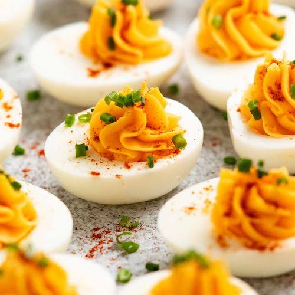

Deviled Eggs Recipe

Traditional Deviled Eggs
Traditional deviled eggs, i have never tried them but they seem easy to make
Ingredients
- Eggs
- Mayo
- Spices like salt, pepper, paprika and red pepper
- Green onion
Steps
- boil the eggs for 8 minutes
- one boiled take the yolks into a bowl
- add seasoning to your liking from the spices mentioned before
- mix with the mayo
- fill the whites with the yolk and spices mix
- sprinkle some green onions and some chili flakes and enjoy